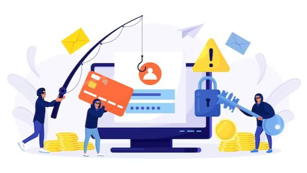

In today's digital age, cyber threats are more prevalent than ever before. One of the most common and dangerous threats faced by businesses is phishing, a type of social engineering attack that tricks users into divulging sensitive information. Phishing attacks can have a devastating impact on businesses, ranging from financial loss to reputational damage. As such, it's crucial for businesses to implement robust phishing protection measures to safeguard their operations and assets.
In this blog post, we'll be discussing the importance of Office 365 phishing protection from the perspective of a security expert. We'll explore the various ways in which phishing attacks can occur, the consequences of falling victim to such attacks, and the measures that businesses can take to prevent them. We'll also delve into the role played by Office 365 in providing advanced phishing protection, and how it can help businesses stay one step ahead of cybercriminals.

Malicious individuals use phishing attacks to deceive users into disclosing sensitive information, including login credentials, credit card details, or personal data. These attacks frequently involve impersonating a trustworthy entity or organization, such as a bank, social media platform, or business application like Office 365. Phishing attacks are frequently distributed via email, although they may also manifest in other formats like text messages, instant messaging, or phone calls.
Individuals and organizations can face severe consequences as a result of phishing attacks. If successful, these attacks allow attackers to gain unauthorized access to sensitive data, which can be used for a range of malicious activities.
Phishing attacks come with several significant risks that one should keep in mind:
To combat phishing attacks, Office 365 has integrated numerous strong security features. These measures are crucial for safeguarding user data and shielding organizations from potential threats.
Here are some key aspects of Office 365's phishing protection:
In the end, as more and more organizations adopt cloud-based solutions like Office 365, the risk of phishing attacks continues to rise. It is essential for organizations to implement robust phishing protection measures to safeguard their data and networks. By engaging a security expert to help with the implementation of a comprehensive phishing protection program, businesses can protect their data, employees, and customers from the devastating effects of phishing attacks.